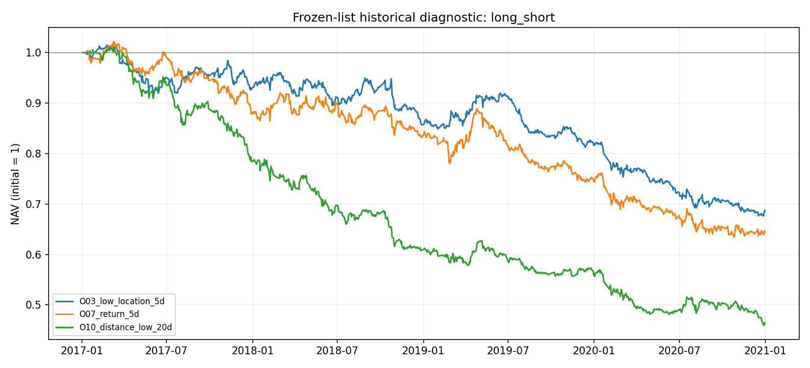
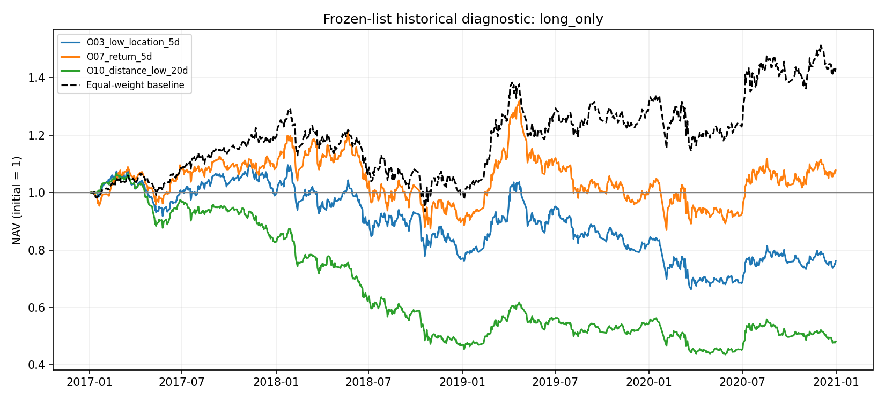
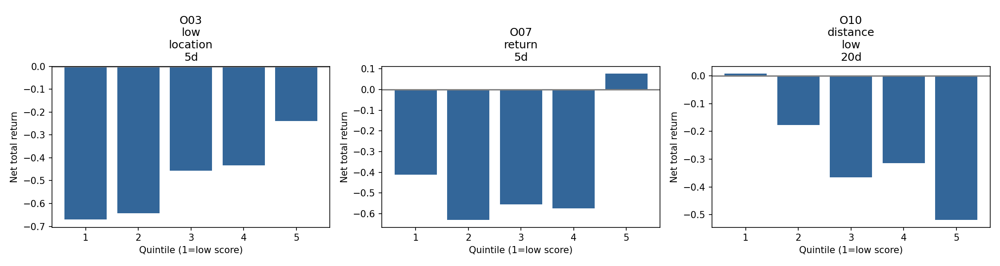

2017–2020 已参与早期筛选。本页为修正方法后的历史复核；不能称作新样本外测试。未来前向样本尚未产生。
报告严格读取 selected_factors.json 中的名单，没有利用展示期指标重新排名或筛选。实验版本 oversold-v2.0，候选 21 个。
样本日期 2017-01-03 至 2020-12-31，50 只股票，输入 48467 行。缺少换手率的 756 行保留价格记录；不再删除后跨行生成标签。
标签先在日期主表上生成 1/3/5 日收盘收益，IC 在每段尾部剔除跨段标签。信号 t 日收盘后形成，t+1 日开盘调仓，逐开盘净值计量；纳入初次建仓、价格漂移后的实际成交额、最终退出费用。3/5 日标签仅用于描述性 IC，不复利成年化组合收益，不将其视为独立显著性样本。
基础成本是假设的单边佣金 3 bps、滑点 2 bps、卖出额附加 10 bps；理论空头另假设年化借券费 200 bps。不是某券商实际费表。敏感性表的 0/5/10/20 bps 是对称全包场景，不能与分项基准混淆。
50 stocks chosen from HS300 membership dated 2020-12-31; survivorship bias, no point-in-time membership reconstruction.
Signal after close t, rebalance at open t+1, mark NAV at each subsequent open. Fractional shares; missing quotes block rebalance of held assets. Price limits, auction liquidity, board lots and actual borrow are unavailable; returns are a timing/cost research proxy, not executable PnL.
股票池为事后冻结名单、行情为复权历史数据，未重建点时成分与公司行为版本。缺失持仓报价使用过去最近价格估值并阻止调仓，完整保留日期和告警；涨跌停、开盘成交能力、最小交易单位及真实借券数据不足，因此所有净值均为研究代理，不能据此认定实盘可执行或盈利。
| factor | phase | observations | total_return | annualized_return | annualized_vol | sharpe | max_drawdown | avg_turnover | total_cost_in_daily_nav_units | blocked_days | terminal_held_count | ic_1_mean | ic_1_ir | ic_1_hit | ic_1_days | ic_3_mean | ic_3_ir | ic_3_hit | ic_3_days | ic_5_mean | ic_5_ir | ic_5_hit | ic_5_days |
|---|---|---|---|---|---|---|---|---|---|---|---|---|---|---|---|---|---|---|---|---|---|---|---|
| O03_low_location_5d | development_train | 487 | -0.14338 | -0.07696 | 0.08000 | -0.96081 | -0.15830 | 0.77400 | 0.39613 | 0 | 0 | 0.05047 | 0.24558 | 0.62241 | 482 | 0.03055 | 0.15045 | 0.56042 | 480 | 0.02561 | 0.12986 | 0.56276 | 478 |
| O03_low_location_5d | development_validation | 244 | -0.04888 | -0.05044 | 0.07449 | -0.65775 | -0.11684 | 0.77379 | 0.19852 | 0 | 0 | 0.04764 | 0.26086 | 0.59671 | 243 | 0.05359 | 0.28909 | 0.57261 | 241 | 0.05624 | 0.32091 | 0.61925 | 239 |
| O03_low_location_5d | historical_review | 243 | -0.15895 | -0.16433 | 0.08701 | -2.01898 | -0.17778 | 0.76682 | 0.19596 | 0 | 0 | 0.04816 | 0.25330 | 0.56612 | 242 | 0.03707 | 0.20344 | 0.60000 | 240 | 0.01949 | 0.11017 | 0.53782 | 238 |
| O03_low_location_5d | history | 974 | -0.31265 | -0.09244 | 0.08046 | -1.16515 | -0.33550 | 0.77014 | 0.78873 | 0 | 0 | 0.04952 | 0.25274 | 0.60268 | 969 | 0.03895 | 0.20100 | 0.57497 | 967 | 0.03314 | 0.17653 | 0.57409 | 965 |
| O07_return_5d | development_train | 487 | -0.16844 | -0.09103 | 0.09064 | -1.00750 | -0.18624 | 0.71293 | 0.36633 | 0 | 0 | 0.03996 | 0.17752 | 0.54054 | 481 | 0.02491 | 0.11419 | 0.53027 | 479 | 0.01400 | 0.06476 | 0.50734 | 477 |
| O07_return_5d | development_validation | 244 | -0.11180 | -0.11525 | 0.10232 | -1.14514 | -0.16410 | 0.73772 | 0.18969 | 0 | 0 | 0.04874 | 0.23126 | 0.59259 | 243 | 0.03401 | 0.15897 | 0.53112 | 241 | 0.03313 | 0.17395 | 0.53975 | 239 |
| O07_return_5d | historical_review | 243 | -0.13220 | -0.13675 | 0.11870 | -1.17925 | -0.16678 | 0.72559 | 0.18595 | 0 | 0 | 0.04917 | 0.21016 | 0.58264 | 242 | 0.03563 | 0.15914 | 0.55833 | 240 | 0.01847 | 0.08422 | 0.56303 | 238 |
| O07_return_5d | history | 974 | -0.35406 | -0.10692 | 0.10121 | -1.06637 | -0.37881 | 0.72117 | 0.74096 | 0 | 0 | 0.04495 | 0.20089 | 0.56508 | 968 | 0.03141 | 0.14345 | 0.53934 | 966 | 0.02181 | 0.10309 | 0.53112 | 964 |
| O10_distance_low_20d | development_train | 487 | -0.39190 | -0.22693 | 0.10281 | -2.45083 | -0.39905 | 0.50717 | 0.26577 | 0 | 0 | 0.00789 | 0.03456 | 0.50314 | 477 | -0.00301 | -0.01389 | 0.47579 | 475 | -0.01011 | -0.04726 | 0.44186 | 473 |
| O10_distance_low_20d | development_validation | 244 | -0.08532 | -0.08799 | 0.09008 | -0.97745 | -0.11213 | 0.51836 | 0.13616 | 0 | 0 | 0.03919 | 0.18990 | 0.60905 | 243 | 0.04511 | 0.22278 | 0.58921 | 241 | 0.05755 | 0.29335 | 0.61088 | 239 |
| O10_distance_low_20d | historical_review | 243 | -0.16888 | -0.17456 | 0.11818 | -1.56366 | -0.19329 | 0.48324 | 0.12701 | 0 | 0 | 0.04687 | 0.21368 | 0.59917 | 242 | 0.03918 | 0.17678 | 0.58333 | 240 | 0.02941 | 0.13438 | 0.54622 | 238 |
| O10_distance_low_20d | history | 974 | -0.53709 | -0.18068 | 0.10393 | -1.86465 | -0.54576 | 0.50229 | 0.52736 | 0 | 0 | 0.02625 | 0.11854 | 0.55498 | 964 | 0.02120 | 0.09811 | 0.53326 | 962 | 0.01848 | 0.08651 | 0.51250 | 960 |



| factor | year | mode | observations | total_return | annualized_return | annualized_vol | sharpe | max_drawdown | avg_turnover | total_cost_in_daily_nav_units | blocked_days | terminal_held_count |
|---|---|---|---|---|---|---|---|---|---|---|---|---|
| O03_low_location_5d | 2017 | long_short | 244 | -0.07250 | -0.07479 | 0.07401 | -1.01317 | -0.09727 | 0.78341 | 0.20066 | 0 | 0 |
| O03_low_location_5d | 2018 | long_short | 243 | -0.08124 | -0.08411 | 0.08564 | -0.98304 | -0.10836 | 0.76491 | 0.19552 | 0 | 0 |
| O03_low_location_5d | 2019 | long_short | 244 | -0.04888 | -0.05044 | 0.07449 | -0.65775 | -0.11684 | 0.77379 | 0.19852 | 0 | 0 |
| O03_low_location_5d | 2020 | long_short | 243 | -0.15895 | -0.16433 | 0.08701 | -2.01898 | -0.17778 | 0.76682 | 0.19596 | 0 | 0 |
| O03_low_location_5d | 2017 | long_only | 244 | -0.01130 | -0.01167 | 0.14130 | -0.01252 | -0.14552 | 0.79272 | 0.19352 | 0 | 0 |
| O03_low_location_5d | 2018 | long_only | 243 | -0.23207 | -0.23954 | 0.24349 | -1.00246 | -0.29988 | 0.78539 | 0.19094 | 0 | 0 |
| O03_low_location_5d | 2019 | long_only | 244 | 0.06556 | 0.06778 | 0.21787 | 0.40917 | -0.23572 | 0.80080 | 0.19550 | 0 | 0 |
| O03_low_location_5d | 2020 | long_only | 243 | -0.09134 | -0.09456 | 0.25296 | -0.26417 | -0.21468 | 0.78116 | 0.18992 | 0 | 0 |
| O07_return_5d | 2017 | long_short | 244 | -0.12175 | -0.12548 | 0.08127 | -1.60893 | -0.14055 | 0.71193 | 0.18315 | 0 | 0 |
| O07_return_5d | 2018 | long_short | 243 | -0.05808 | -0.06016 | 0.09921 | -0.57593 | -0.09624 | 0.71791 | 0.18411 | 0 | 0 |
| O07_return_5d | 2019 | long_short | 244 | -0.11180 | -0.11525 | 0.10232 | -1.14514 | -0.16410 | 0.73772 | 0.18969 | 0 | 0 |
| O07_return_5d | 2020 | long_short | 243 | -0.13220 | -0.13675 | 0.11870 | -1.17925 | -0.16678 | 0.72559 | 0.18595 | 0 | 0 |
| O07_return_5d | 2017 | long_only | 244 | 0.08045 | 0.08319 | 0.15358 | 0.59690 | -0.12019 | 0.73503 | 0.17943 | 0 | 0 |
| O07_return_5d | 2018 | long_only | 243 | -0.17987 | -0.18587 | 0.26141 | -0.65615 | -0.27851 | 0.76627 | 0.18629 | 0 | 0 |
| O07_return_5d | 2019 | long_only | 244 | 0.10021 | 0.10366 | 0.21613 | 0.56386 | -0.27432 | 0.77712 | 0.18972 | 0 | 0 |
| O07_return_5d | 2020 | long_only | 243 | 0.06068 | 0.06299 | 0.27436 | 0.36162 | -0.17073 | 0.79937 | 0.19435 | 0 | 0 |
| O10_distance_low_20d | 2017 | long_short | 244 | -0.21618 | -0.22242 | 0.09243 | -2.67419 | -0.22517 | 0.47891 | 0.12605 | 0 | 0 |
| O10_distance_low_20d | 2018 | long_short | 243 | -0.22647 | -0.23379 | 0.11247 | -2.31046 | -0.22941 | 0.54005 | 0.14077 | 0 | 0 |
| O10_distance_low_20d | 2019 | long_short | 244 | -0.08532 | -0.08799 | 0.09008 | -0.97745 | -0.11213 | 0.51836 | 0.13616 | 0 | 0 |
| O10_distance_low_20d | 2020 | long_short | 243 | -0.16888 | -0.17456 | 0.11818 | -1.56366 | -0.19329 | 0.48324 | 0.12701 | 0 | 0 |
| O10_distance_low_20d | 2017 | long_only | 244 | -0.17348 | -0.17863 | 0.13064 | -1.44022 | -0.22384 | 0.61184 | 0.14936 | 0 | 0 |
| O10_distance_low_20d | 2018 | long_only | 243 | -0.43738 | -0.44924 | 0.24921 | -2.26593 | -0.46582 | 0.70234 | 0.17075 | 0 | 0 |
| O10_distance_low_20d | 2019 | long_only | 244 | 0.15466 | 0.16012 | 0.19618 | 0.85476 | -0.19282 | 0.66232 | 0.16169 | 0 | 0 |
| O10_distance_low_20d | 2020 | long_only | 243 | -0.12574 | -0.13008 | 0.24817 | -0.43571 | -0.22539 | 0.60757 | 0.14772 | 0 | 0 |
| factor | mode | symmetric_all_in_bps | observations | total_return | annualized_return | annualized_vol | sharpe | max_drawdown | avg_turnover | total_cost_in_daily_nav_units | blocked_days | terminal_held_count |
|---|---|---|---|---|---|---|---|---|---|---|---|---|
| O03_low_location_5d | long_short | 0 | 974 | 0.51223 | 0.11294 | 0.08119 | 1.35880 | -0.06602 | 0.77049 | 0.00000 | 0 | 0 |
| O03_low_location_5d | long_short | 5 | 974 | 0.03939 | 0.01005 | 0.08083 | 0.16407 | -0.15484 | 0.77032 | 0.37514 | 0 | 0 |
| O03_low_location_5d | long_short | 10 | 974 | -0.28560 | -0.08333 | 0.08049 | -1.04054 | -0.31052 | 0.77015 | 0.75013 | 0 | 0 |
| O03_low_location_5d | long_short | 20 | 974 | -0.66251 | -0.24500 | 0.07994 | -3.47380 | -0.66758 | 0.76984 | 1.49965 | 0 | 0 |
| O03_low_location_5d | long_only | 0 | 974 | 0.63954 | 0.13646 | 0.21902 | 0.69425 | -0.23805 | 0.78839 | 0.00000 | 0 | 0 |
| O03_low_location_5d | long_only | 5 | 974 | 0.11737 | 0.02913 | 0.21866 | 0.24124 | -0.30168 | 0.78816 | 0.38383 | 0 | 0 |
| O03_low_location_5d | long_only | 10 | 974 | -0.23846 | -0.06805 | 0.21831 | -0.21301 | -0.39511 | 0.78793 | 0.76745 | 0 | 0 |
| O03_low_location_5d | long_only | 20 | 974 | -0.64622 | -0.23573 | 0.21769 | -1.12471 | -0.67257 | 0.78750 | 1.53405 | 0 | 0 |
| O07_return_5d | long_short | 0 | 974 | 0.35480 | 0.08173 | 0.10203 | 0.82116 | -0.09630 | 0.72147 | 0.00000 | 0 | 0 |
| O07_return_5d | long_short | 5 | 974 | -0.04633 | -0.01220 | 0.10163 | -0.06991 | -0.17747 | 0.72132 | 0.35128 | 0 | 0 |
| O07_return_5d | long_short | 10 | 974 | -0.32869 | -0.09797 | 0.10125 | -0.96743 | -0.35662 | 0.72118 | 0.70243 | 0 | 0 |
| O07_return_5d | long_short | 20 | 974 | -0.66737 | -0.24782 | 0.10059 | -2.77912 | -0.67085 | 0.72091 | 1.40433 | 0 | 0 |
| O07_return_5d | long_only | 0 | 974 | 1.27473 | 0.23694 | 0.23163 | 1.03467 | -0.23879 | 0.76823 | 0.00000 | 0 | 0 |
| O07_return_5d | long_only | 5 | 974 | 0.56558 | 0.12297 | 0.23140 | 0.61750 | -0.29204 | 0.76799 | 0.37401 | 0 | 0 |
| O07_return_5d | long_only | 10 | 974 | 0.07758 | 0.01952 | 0.23120 | 0.19975 | -0.34155 | 0.76776 | 0.74780 | 0 | 0 |
| O07_return_5d | long_only | 20 | 974 | -0.48943 | -0.15964 | 0.23087 | -0.63702 | -0.54751 | 0.76732 | 1.49474 | 0 | 0 |
| O10_distance_low_20d | long_short | 0 | 974 | -0.21551 | -0.06087 | 0.10429 | -0.54996 | -0.27273 | 0.50247 | 0.00000 | 0 | 0 |
| O10_distance_low_20d | long_short | 5 | 974 | -0.38579 | -0.11848 | 0.10411 | -1.15885 | -0.40281 | 0.50239 | 0.24466 | 0 | 0 |
| O10_distance_low_20d | long_short | 10 | 974 | -0.51910 | -0.17256 | 0.10398 | -1.76902 | -0.52877 | 0.50231 | 0.48925 | 0 | 0 |
| O10_distance_low_20d | long_short | 20 | 974 | -0.70521 | -0.27096 | 0.10379 | -2.99089 | -0.70753 | 0.50215 | 0.97819 | 0 | 0 |
| O10_distance_low_20d | long_only | 0 | 974 | -0.09929 | -0.02669 | 0.21237 | -0.02066 | -0.42157 | 0.64436 | 0.00000 | 0 | 0 |
| O10_distance_low_20d | long_only | 5 | 974 | -0.34181 | -0.10256 | 0.21219 | -0.40319 | -0.50289 | 0.64415 | 0.31370 | 0 | 0 |
| O10_distance_low_20d | long_only | 10 | 974 | -0.51900 | -0.17251 | 0.21204 | -0.78599 | -0.59056 | 0.64395 | 0.62721 | 0 | 0 |
| O10_distance_low_20d | long_only | 20 | 974 | -0.74308 | -0.29644 | 0.21189 | -1.55149 | -0.75778 | 0.64356 | 1.25365 | 0 | 0 |
| factor | phase | observations | total_return | annualized_return | annualized_vol | sharpe | max_drawdown | avg_turnover | total_cost_in_daily_nav_units | blocked_days | terminal_held_count | ic_1_mean | ic_1_ir | ic_1_hit | ic_1_days | ic_3_mean | ic_3_ir | ic_3_hit | ic_3_days | ic_5_mean | ic_5_ir | ic_5_hit | ic_5_days | selection_score |
|---|---|---|---|---|---|---|---|---|---|---|---|---|---|---|---|---|---|---|---|---|---|---|---|---|
| O03_low_location_5d | development_validation | 244 | -0.04888 | -0.05044 | 0.07449 | -0.65775 | -0.11684 | 0.77379 | 0.19852 | 0 | 0 | 0.04764 | 0.26086 | 0.59671 | 243 | 0.05359 | 0.28909 | 0.57261 | 241 | 0.05624 | 0.32091 | 0.61925 | 239 | 1.08730 |
| O07_return_5d | development_validation | 244 | -0.11180 | -0.11525 | 0.10232 | -1.14514 | -0.16410 | 0.73772 | 0.18969 | 0 | 0 | 0.04874 | 0.23126 | 0.59259 | 243 | 0.03401 | 0.15897 | 0.53112 | 241 | 0.03313 | 0.17395 | 0.53975 | 239 | 1.06349 |
| O10_distance_low_20d | development_validation | 244 | -0.08532 | -0.08799 | 0.09008 | -0.97745 | -0.11213 | 0.51836 | 0.13616 | 0 | 0 | 0.03919 | 0.18990 | 0.60905 | 243 | 0.04511 | 0.22278 | 0.58921 | 241 | 0.05755 | 0.29335 | 0.61088 | 239 | 1.02778 |
| O05_five_low_closes | development_validation | 244 | -0.02905 | -0.02999 | 0.07358 | -0.37713 | -0.09970 | 0.60364 | 0.15700 | 0 | 0 | 0.02522 | 0.16716 | 0.53498 | 243 | 0.02285 | 0.14124 | 0.53527 | 241 | 0.02288 | 0.14873 | 0.53138 | 239 | 0.92857 |
| O14_panic_range_low_close | development_validation | 244 | -0.20275 | -0.20865 | 0.09275 | -2.47568 | -0.20577 | 0.63867 | 0.16546 | 0 | 0 | 0.04546 | 0.23030 | 0.60905 | 243 | 0.05520 | 0.30288 | 0.58091 | 241 | 0.07049 | 0.39246 | 0.63180 | 239 | 0.92460 |
| O13_low_close_high_vol | development_validation | 244 | -0.16284 | -0.16770 | 0.07795 | -2.31534 | -0.19016 | 0.78005 | 0.19999 | 0 | 0 | 0.04274 | 0.22238 | 0.61728 | 243 | 0.04838 | 0.26301 | 0.60996 | 241 | 0.06527 | 0.34804 | 0.61925 | 239 | 0.82143 |
| O11_low_close_turn_shock | development_validation | 244 | -0.26779 | -0.27524 | 0.08908 | -3.56696 | -0.26871 | 1.02837 | 0.26056 | 0 | 0 | 0.04450 | 0.21446 | 0.60082 | 243 | 0.03600 | 0.18434 | 0.56432 | 241 | 0.04447 | 0.25239 | 0.61925 | 239 | 0.66667 |
| O04_three_low_closes | development_validation | 244 | -0.12053 | -0.12422 | 0.07310 | -1.77754 | -0.15916 | 0.69222 | 0.17854 | 0 | 0 | 0.02095 | 0.13948 | 0.53719 | 242 | 0.01851 | 0.11855 | 0.53750 | 240 | 0.02418 | 0.16634 | 0.53361 | 238 | 0.66270 |
| O12_low_close_turn_dollar | development_validation | 244 | -0.20560 | -0.21157 | 0.09092 | -2.56807 | -0.21272 | 0.61014 | 0.15849 | 0 | 0 | 0.02835 | 0.13212 | 0.55144 | 243 | 0.02656 | 0.12804 | 0.55602 | 241 | 0.03112 | 0.14900 | 0.55649 | 239 | 0.66270 |
| O02_low_location_3d | development_validation | 244 | -0.20118 | -0.20704 | 0.07942 | -2.88014 | -0.22077 | 0.98477 | 0.24995 | 0 | 0 | 0.03784 | 0.20489 | 0.58848 | 243 | 0.04170 | 0.23386 | 0.60581 | 241 | 0.05158 | 0.30136 | 0.60251 | 239 | 0.65873 |
| O09_drawdown_20d | development_validation | 244 | -0.18961 | -0.19518 | 0.09615 | -2.20921 | -0.21358 | 0.55596 | 0.14529 | 0 | 0 | 0.01628 | 0.07312 | 0.54321 | 243 | 0.00456 | 0.02148 | 0.46473 | 241 | 0.00638 | 0.03133 | 0.51883 | 239 | 0.63492 |
| O06_return_3d | development_validation | 244 | -0.22379 | -0.23021 | 0.09569 | -2.68489 | -0.22766 | 0.91165 | 0.23209 | 0 | 0 | 0.03190 | 0.15068 | 0.55144 | 243 | 0.03637 | 0.17597 | 0.56432 | 241 | 0.03198 | 0.15923 | 0.56067 | 239 | 0.60317 |
| O12v2_low_strength_turn_3d | development_validation | 244 | -0.07287 | -0.07517 | 0.09021 | -0.82129 | -0.16397 | 0.56365 | 0.14722 | 0 | 0 | -0.00275 | -0.01266 | 0.50617 | 243 | 0.00416 | 0.01919 | 0.46058 | 241 | -0.00076 | -0.00370 | 0.47699 | 239 | 0.59127 |
| O15_three_day_bear_pressure | development_validation | 244 | -0.23672 | -0.24345 | 0.08739 | -3.14709 | -0.23672 | 0.98514 | 0.25002 | 0 | 0 | 0.03468 | 0.18154 | 0.59259 | 243 | 0.03307 | 0.18210 | 0.56846 | 241 | 0.03756 | 0.21313 | 0.54393 | 239 | 0.58333 |
| O08_downside_sum_5d | development_validation | 244 | -0.12457 | -0.12838 | 0.08053 | -1.66558 | -0.15439 | 0.67235 | 0.17373 | 0 | 0 | 0.01462 | 0.07104 | 0.51852 | 243 | 0.01145 | 0.05842 | 0.49793 | 241 | 0.00658 | 0.03536 | 0.51046 | 239 | 0.57937 |
| O14v2_low_strength_range_3d | development_validation | 244 | -0.13197 | -0.13599 | 0.08833 | -1.61043 | -0.19639 | 0.63810 | 0.16536 | 0 | 0 | -0.00218 | -0.01068 | 0.52263 | 243 | -0.00271 | -0.01314 | 0.45643 | 241 | -0.01093 | -0.05747 | 0.47280 | 239 | 0.52381 |
| O13v2_low_strength_relative_vol_3d | development_validation | 244 | -0.14367 | -0.14801 | 0.07761 | -2.02465 | -0.16752 | 0.74543 | 0.19156 | 0 | 0 | 0.01062 | 0.05896 | 0.51029 | 243 | 0.01668 | 0.09342 | 0.51867 | 241 | 0.01492 | 0.08766 | 0.55230 | 239 | 0.48016 |
| O11v2_low_strength_turn_shock_3d | development_validation | 244 | -0.10247 | -0.10565 | 0.08638 | -1.24952 | -0.17065 | 1.07738 | 0.27261 | 0 | 0 | -0.00179 | -0.01060 | 0.50206 | 243 | 0.00796 | 0.04374 | 0.51452 | 241 | 0.01143 | 0.06307 | 0.52301 | 239 | 0.41667 |
| O01_seed_upper_room_3d | development_validation | 244 | -0.27676 | -0.28440 | 0.07739 | -4.28246 | -0.28269 | 0.93558 | 0.23789 | 0 | 0 | 0.02028 | 0.10455 | 0.55967 | 243 | 0.01866 | 0.09848 | 0.50622 | 241 | 0.02398 | 0.13094 | 0.53138 | 239 | 0.36905 |
| O16_low_close_rebound_gap | development_validation | 244 | -0.27968 | -0.28739 | 0.07624 | -4.40322 | -0.28994 | 1.25328 | 0.31533 | 0 | 0 | 0.02296 | 0.14002 | 0.58333 | 240 | 0.01759 | 0.11427 | 0.55462 | 238 | 0.03153 | 0.21310 | 0.58475 | 236 | 0.36111 |
| O16v2_low_strength_gap_3d | development_validation | 244 | -0.25748 | -0.26470 | 0.07153 | -4.26054 | -0.25748 | 1.23695 | 0.31136 | 0 | 0 | -0.02195 | -0.13571 | 0.45000 | 240 | -0.01109 | -0.06898 | 0.45378 | 238 | -0.02130 | -0.13254 | 0.44068 | 236 | 0.10317 |
data_quality.json、run_manifest.json、events.jsonl、all_metrics.csv、all_daily_returns.csv.gz、all_ic.csv.gz、factor_coverage.csv 保存质量、版本、过程和明细。旧口径结果保留在 runs/final 与 runs/legacy_reproduced；新旧收益时点和费用不同，不应把差异解释为策略突然改进。